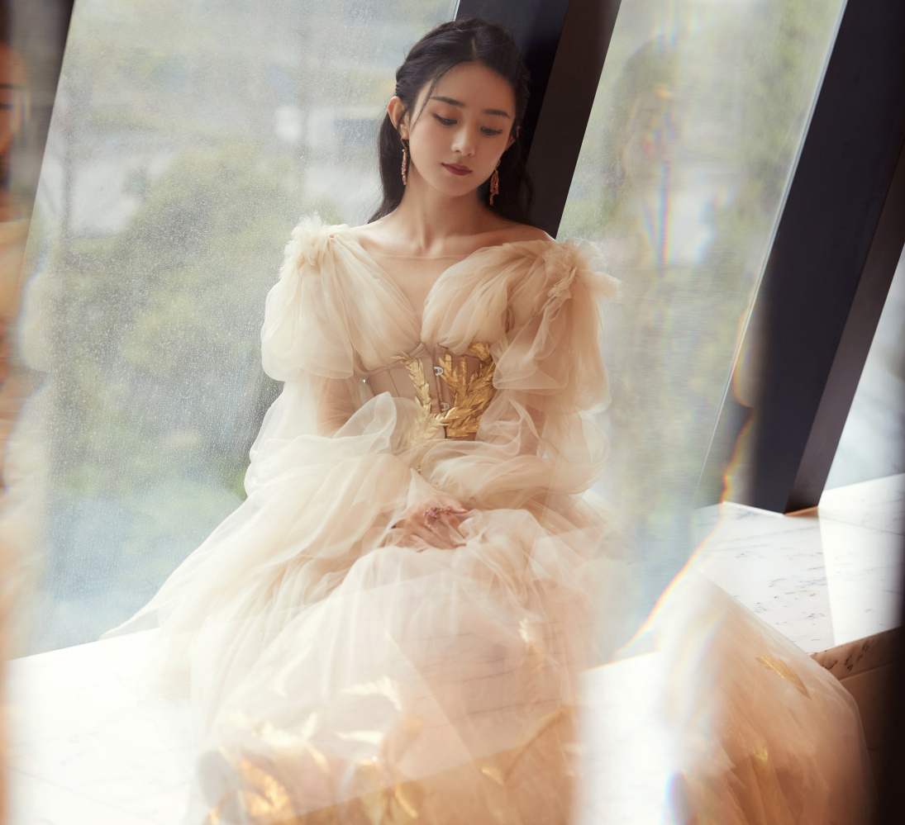

目录
基本信息
赵丽颖，1987年10月16日出生于河北省廊坊市，中国内地影视女演员。
2006年，因获得《雅虎搜星》比赛冯小刚组冠军而进入演艺圈 [2] ；同年，在冯小刚执导的《跪族篇》中担任女主角 [3] 。2011年，因在古装剧《新还珠格格》中饰演晴儿被更多观众认识 [4] 。2013年，凭借古装剧《陆贞传奇》收获更多关注。2014年，在第10届中国金鹰电视艺术节投票活动中被选为“金鹰女神” [5] ；同年，她还凭借爱情剧《杉杉来了》获得了第5届国剧盛典内地最具人气女演员奖；并成立了海润传媒赵丽颖工作室。
2015年，主演的仙侠剧《花千骨》创造中国内地周播剧收视纪录 [6] ，其个人也因此赢得广泛关注，更是凭借该剧先后获得第6届澳门国际电视节金莲花最佳女主角奖、第6届国剧盛典最具收视号召力演员奖、第22届上海电视节白玉兰奖最佳女主角奖提名、第28届中国电视金鹰奖观众喜爱的女演员奖 [7-9] [237] 。2016年，担任河北省旅游形象大使 [1] 。2017年，凭借电影《乘风破浪》获得第24届北京大学生电影节最受大学生欢迎女演员奖 [10] ；而其主演的古装剧《楚乔传》则成为了中国内地首部在播期间网络播放量突破400亿次的电视剧 [11] 。2018年，主演的都市剧《你和我的倾城时光》播出 [12-13] 。此后，她又凭借古装剧《知否知否应是绿肥红瘦》获得了第25届上海电视节白玉兰奖最佳女演员提名 [14] 、第30届中国电视金鹰奖观众喜爱的女演员奖 [17] 。2020年，主演悬疑剧《谁是凶手》以及现实题材剧《幸福到万家》。
早年经历
1987年10月16日（农历八月二十四），赵丽颖出生于河北廊坊市的一个普通家庭，祖辈为农民，她亦出身于农村，而农村的生活经历，则磨练出了她坚强的意志，也造就了其坚韧顽强的个性 [21]。
小时候的赵丽颖就特别喜欢看别人演戏，也幻想自己有一天能够成为演员，可她的父亲只是一名派出所民警，母亲也只是在百货商店从事销售员一职，家中完全没有门路也没有一定的经济条件去支持她实现儿时的梦想 [22]。
长大后，赵丽颖考入了廊坊市电子信息工程学校空乘专业，但毕业后的她却由于家庭经济条件的限制，不得不放弃投考空姐的机会。而只能选择在自家附近的管道防腐公司做销售工作 [23]。
演艺经历
2006年5月，参加由雅虎、浙江卫视、华谊兄弟传媒集团联合主办的《雅虎搜星》比赛，并凭借个人表现以及投票网友的支持获得冯小刚组的冠军，从而正式进入演艺圈 [24] ；之后，她还在冯小刚执导的广告片《跪族篇》中担任了女主角 [25] ；同年，签约华谊兄弟传媒集团，并与周迅合拍玉兰油广告；11月，参演家庭伦理剧《金婚》，在剧中饰演淘气反叛的佟家三女儿佟多多 [26] ；此外，赵丽颖还出演了古装剧《南越王》，并在剧中扮演清新可人的小皇后一角。
2007年，参演电影处女作《镖行天下之牡丹阁》，饰演牡丹的妹妹小红；1月，与郭晓东、刘孜、归亚蕾共同出演爱情剧《世纪不了情》；同年，在民国爱情剧《春去春又回》中饰演温婉可人的任洁儿 [27] 。
2008年，在民国情感剧《锁清秋》中饰演聪明机灵的丫鬟文雁。
2009年1月，主演数字电影《爱杀九河堂》；5月，在田中裕子、余少群主演的宫廷剧《苍穹之昴》中饰演性情温顺的玲儿，这也是赵丽颖首次出演古装剧 [28] ；8月，获得第三届全球华人“非常短片”创意大赛“最佳人气女演员” [29] 。
2010年1月，主演年代剧《锣鼓巷》，饰演少女时期的李秋萍；6月，在情感偶像剧《佳期如梦》中改变荧屏形象，饰演性格叛逆、迷恋朋克的90后女孩安安 [30] ；同年，在古装剧《红楼梦》中饰演端雅稳重、知书达礼的邢岫烟，并凭借该剧获得观众的关注 [31] 。
2011年，与徐峥联袂主演古装剧《大内低手》，在剧中饰演善良可爱的陈馨儿，这也是她首次参演喜剧类型的电视剧 [32] ；同年，签约海润影视集团；4月，出演情感剧《新玉观音》，在剧中饰演乖巧清纯的阿静；7月16日，在古装爱情剧《新还珠格格》中饰演甜美端庄、深明大义的晴儿 [4] ；9月11日，与李念、印小天合作出演都市情感剧《夏妍的秋天》，在剧中饰演家境优厚、个性温柔的女孩唐小然 [33] 。
2013年5月5日，赵丽颖主演的古装励志剧《陆贞传奇》上映，她在剧中饰演聪明睿智的一代女相陆贞 [36]
，其担任女主角的首部剧，并与陈晓共同演唱该剧的片尾曲《心情》；该剧首播期间在全国网收视统计中占有平均8.72%的收视份额；在csm46收视统计中排名同时段第一，在全年收视率统计中排名年度第三；此外，该剧还被日本、马来西亚、韩国等国家引进播出
[37] ；7月13日，主演古装神话剧《追鱼传奇》，在剧中饰演机灵可爱的鲤鱼精红绫 [38]
；该剧首播两日全国网的平均收视率达到1.25%，平均收视份额为8.51%，两项成绩均排名同时段第一；大结局当日则以10.75%的收视份额获得同时段收视冠军 [39-40]
；8月13日，赵丽颖主演的古装爱情片《宫锁沉香》上映，她在片中改变银幕形象，饰演心胸狭窄、笑里藏刀的反派角色琉璃 [41] ；11月20日，在“青春的选择”2013年度盛典中，获得内地最受欢迎女演员奖 [42]
；12月，获得第四届乐视盛典内地最受欢迎女演员奖以及国剧盛典最受观众喜爱的新人女演员奖 [43-44] 。


个人生活
家庭成员
赵丽颖有一个比她小6岁的弟弟赵建飞，姐弟俩在家里经常斗嘴吵架 [114] 。
感情生活
2018年10月16日，赵丽颖与冯绍峰发布结婚证照片，宣布正式结为夫妻 [119] 。2019年1月1日，冯绍峰宣布赵丽颖怀孕 [120] ；3月8日，赵丽颖的儿子想想出生 [121] 。
投资理财
2015年4月，海润影业暨临润投资咨询有限公司以1元/注册资本的价格将90万元出资转让给赵丽颖；同年，赵丽颖以141.87万股成为海润影视第14大股东 [115] ；12月22日，赵丽颖在获得刘小枫转让的稻草熊影业1%的股权后，成为江苏稻草熊影业股东。
2016年3月，赵丽颖以估值1080万元的股份成为暴风科技股东 [116] ；11月，赵丽颖出任一下科技副总裁 [117] 。2019年3月，赵丽颖加盟和颂传媒成为合伙人 [118] 。